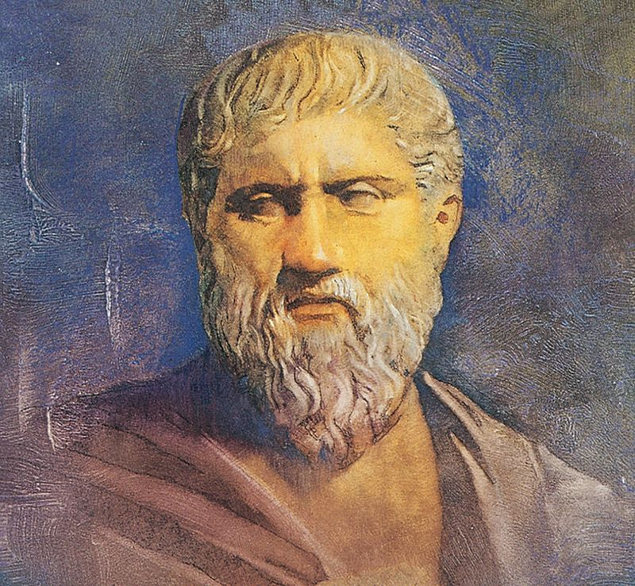
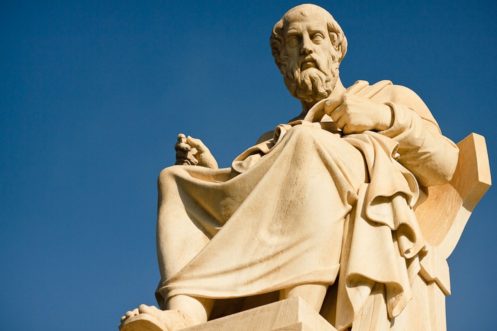

Самое известное учение об идеальном государстве принадлежит великому древнегреческому философу Платону. Чтобы понять суть взглядов на идеально государство, необходимо знать суть его философии в целом. Платон считал необходимым различать обладающие истинным
бытием существующие вне времени и пространства идеи и сами вещи, представляющие собой некие бледные копии, воплощения идей. Относительно к государству сказанное означает, что Платон различал государство как идею, совершенное идеальное
государство, существующее в мире идей, и реально существующие государства. Согласно Платону, реально существующие государства следует преобразовать таким образом, чтобы они соответствовали идеальному государству, т.е. государству как
идее.
Платон считал, что идеальное государство должно быть устроено в соответствии с принципами справедливости. По его мнению, справедливость предполагает, что, во-первых, интересы целого (государства) важнее
и выше интересов частного (отдельных индивидов). Во-вторых, принцип справедливости означает, что каждый элемент целого должен выполнять присущие ему функции. В этой связи он делит всё население идеального государства на три сословия:
философов-правителей, воинов (стражников) и ремесленников и земледельцев (в это сословие включаются все люди, так или иначе связанные с производством). Они являются носителями трех основных начал государства: разумного (мудрость),
яростного (мужество) и вожделеющего. Справедливость заключается в том, чтобы каждое из этих сословий выполняло свои функции и не вмешивалось в дела других.
 Философов-правителей он называет «совершенными стражами», а стражей – «помощниками правителей и проводниками их взглядов». Философы должны править потому, что только они способны постичь
истинное бытие, т.е. истинное благо для государства и всех его членов. Формирование сословия правителей-философов, по Платону, происходит следующим образом. Всем стражам еще в детстве даются предварительные знания в различных областях
(счет, геометрия и др.). Одновременно их берут и на войну, чтобы воспитать в них мужество и другие необходимые качества. По достижении двадцати лет те из них, «кто во всем этом – в трудах, в науках, в опасностях – всегда будет выказывать
себя самым находчивым», заносятся в «особый список». Отобранные продолжают дальнейшие занятия, и по достижении ими тридцати лет производится второй отбор. «Самые лучшие» еще пять лет обучаются диалектике – «искусству рассуждать». И
только после этого они занимают различные государственные должности.
 Платон понимал, что идеальное государство должно быть закрытым и относительно небольшим по размерам. Оно должно быть закрытым по той причине, что любые ложные ценности могут дезориентировать
его население. А небольшим – по той причине, что достаточно эффективно контролировать большое государство практически невозможно.
Значение и недостатки учения Платона
Важнейшее значение учения Платона заключается в том, что оно положило начало теориям социального управления в самом широком смысле слова. Вместе с тем недостатки его учения очевидны.
Прежде всего, отметим, что никоим образом невозможно доказать, что идея государства где-либо существует. Поэтому и представления о его устройстве, какими бы оригинальными и глубокими они ни были, являются чисто субъективными. Кроме
того, очевидно, что нарисованный им образ жизни стражей отнюдь не такой привлекательный. И на вопрос о том, а будут ли сами стражи чувствовать себя счастливыми, Платон уклончиво отвечал, что важнее благо всего государства, а не отдельных
его сословий. Стражи, по его мнению, должны чувствовать себя счастливыми в силу того, что выполняют присущие им функции и вносят посильный вклад в общее благо. Надо, говорил Платон, внушить им, чтобы они стали отличными мастерами своего
дела. Наконец, платоновское идеальное государство, по сути, не знает изменений.